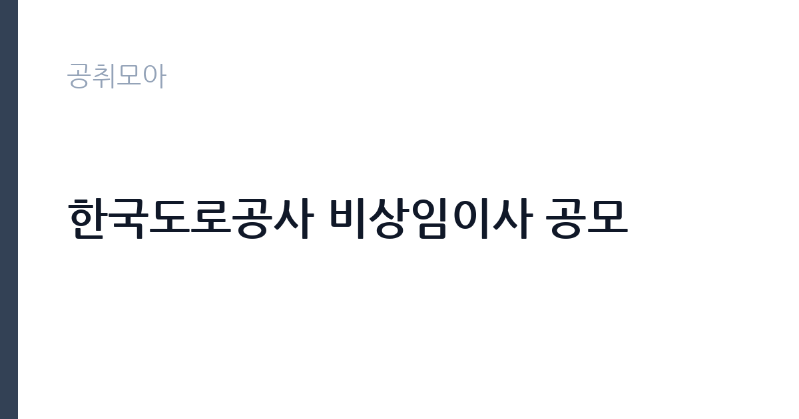

[공공기관] 한국도로공사 비상임이사 공모
한국도로공사 · 전국 · 마감 2026-09-29 (D-8) · 출처 나라일터

한눈에 보는 모집 조건
| 기관 | 한국도로공사 |
|---|---|
| 공고명 | 한국도로공사 비상임이사 공모 |
| 고용형태 | 정규직 |
| 근무지 | 전국 |
| 게시일 | 2026-09-22 |
| 마감일 | 2026-09-29 (D-8) |
지원자격, 이렇게 읽으세요
- 비상임이사 2명
- 접수 ~2026-09-29 마감
- 세부 조건은 원문 공고문 확인
자격요건은 법령상 결격이 없는지와 전문성 두 축으로 구성된다. 공공기관운영법과 공직자윤리법, 부패방지법, 상법상 공공기관 취업에 제한을 받지 않아야 하며, 경영에 대한 지식과 경험, 경영비전 제시 능력, 청렴성과 윤리의식, 전문분야 지식, 경영 분석과 판단력을 심사기준으로 삼는다고 공고문에 명시되어 있다. 형식 요건보다 실질 경력과 평판이 당락을 가르는 자리이므로, 경력기술서에 경영 성과와 지배구조 경험을 구체적으로 담아야 한다.
이 공고의 포인트
비상임이사는 상근 임원이 아니라 이사회에 참여하는 비상근 이사다. 본업이 있는 전문가가 공기업 경영에 참여할 수 있는 몇 안 되는 통로다. 도로공사는 모빌리티 플랫폼 전환을 표방하고 있어, 교통·물류·인프라·재무·법조 등 각 분야 전문가의 수요가 있다. 임기 2년에 연임 가능이라는 조건은 단기 자문이 아니라 중기 경영 전략에 실제로 관여한다는 의미다.
전형은 어떻게 진행되나
공모 접수 후 서류심사와 면접심사를 거쳐 후보자를 추리고, 주주총회 의결을 통해 선임하는 절차가 일반적이다. 기획재정부 공공기관운영위원회의 심의가 포함될 수도 있다. 지원 서류는 이력서와 자기소개서를 넘어 경영 비전과 직무수행계획을 요구하는 경우가 많으므로, 원문 공고문의 제출 서류 목록을 확인하고 분량에 맞춰 준비해야 한다.
원문에서 확인한 전형 방식
> “모두의 이동가치를 실현하는 글로벌 No.1 모빌리티 플랫폼”을 지향하는 한국도로공사에서 전문성과 역량을 갖춘 비상임이사를 모십니다. 1. 공모직위 : 비상임이사(임기 2년, 직무수행실적 등에 따라 1년 단위 연임 가능) 2. 모집인원 : 2명 3. 자격요건 「공공기관의 운영에 관한 법률」 제34조, 「공직자윤리법」 제17조, 「부패방지 및 국민권익위원회의 설치와 운영에 관한 법률」 제82조, 상법 제382조 등 관련법령에 따라 공공기관 취업에 제한을 받지 않는 분으로서, ①경영에 대한 지식과 경험이 풍부한 분 ②최고 의사결정기구 구성원으로서의 경영비전 제시 능력을 갖춘 분 ③청렴성과 도덕성 등 건전한 윤리의식을 갖춘 분 ④전문분야에 대한 해박한 지식과 경험이 풍부한 분 ⑤공사경영에 대한 정확한 분석과 판단력을 갖춘 분 ※ 상기 자격요건은 심사기준으로 활용되므로 지원서, 자기소개서 및 직무수행계획서 작성 시 상기내용을 고려하여 작성하시기 바랍니다. (한국도로공사 홈페이지(www.ex.co.kr) 참조) 4. 제출서류 o 지원서, 자기소개서(3매 이내), 직무수행계획서(3매 이내), 개인정보제공동의서, 이해관계 여부 자기신고서, 학력증명서 등 증빙자료, 경
이런 분께 추천해요
- 기업 경영진이나 공공기관 임원 경험이 있어 이사회 운영을 아는 경영 전문가
- 교통·물류·인프라·도시계획 분야의 학식과 현장 경험을 갖춘 전문가
- 회계·법무·재무 분야 전문직으로서 공기업 지배구조 감시에 관심 있는 사람
지원 전 체크리스트
- 공운법·공직자윤리법·부패방지법·상법상 결격사유에 해당하지 않는지 점검한다
- 경영 비전과 이사회 기여 방안을 담은 직무수행계획서를 준비한다
- 추천서나 재직증명서 등 경력 증빙 서류를 미리 발급받는다
- 접수 마감일(9월 29일)과 접수 방법을 원문 공고문에서 확인한다
모집 일정과 제출 타이밍
접수는 2026년 9월 29일에 마감된다. 이후 서류·면접 심사와 선임 절차를 거쳐 10월 중에 임기가 시작되는 흐름이 일반적이다. 전임자의 임기가 10월까지라는 보도가 있었으므로, 공백 없이 이어지는 일정으로 보인다. 정확한 심사 일정과 임기 시작일은 원문 공고문에서 확인해야 한다.
직무 이해하기: 공공기관
비상임이사의 본무대는 이사회다. 예산과 결산, 중장기 경영목표, 주요 사업 투자와 임원 인사 같은 안건을 심의·의결한다. 경영진의 독주를 견제하는 감시자 역할과 전문 분야의 자문 역할이 함께 요구된다. 도로공사의 경우 고속도로 건설·유지관리 투자, 통행료 정책, 휴게소 운영과 신사업 같은 현안이 이사회 안건으로 올라오므로, 해당 분야의 식견이 실제 발언권으로 이어진다.
자기소개서 작성 팁
지원 서류의 핵심은 이사회에 어떤 시각을 더할 수 있는지다. 본인의 전문 분야에서 도로공사 경영에 기여할 구체적 의제를 제시하는 구성이 좋다. 지배구조와 윤리경영에 대한 소신을 밝히되, 원론적 문구가 아니라 과거 이사회나 위원회 참여 경험을 근거로 쓰는 것이 설득력이 있다. 분량 제한을 지키면서도 경영비전 제시 능력을 드러내야 한다.
면접 준비 포인트
면접에서는 공기업 경영 현안에 대한 질문이 나온다. 도로공사의 재무구조와 통행료 정책, 안전관리와 모빌리티 전환 전략 같은 이슈에 대한 본인의 시각을 묻는다. 비상임이사로서 경영진과 대립해야 했던 상황을 가정하는 질문도 단골이다. 최근 도로공사 관련 보도와 국정감사 지적 사항을 정리하고, 독립적 판단자로서의 태도를 보여주는 것이 중요하다.
급여·근무조건 읽는 법
구체적인 보수 조건은 원문 공고문에서 확인해야 한다. 참고로 2026년 언론 보도(MBC)에 따르면 전임 한국도로공사 비상임이사는 2년 임기 동안 총 5,400만 원가량을 수령한 것으로 전해졌다. 단순 계산하면 연 2,700만 원, 월 225만 원 수준으로, 상근 급여가 아니라 이사회 참석 등에 따른 월정 활동비 성격이다. 이번 공모의 지급 기준도 같은 구조일 가능성이 크지만, 정확한 금액은 원문 공고문에서 확인하기 바란다.
자주 묻는 질문
- 비상임이사는 상근직인가요?
상근하지 않고 이사회와 위원회 활동에 참여하는 비상근직이다. 회의 참석 등에 따른 활동비를 받는 구조이며, 세부 조건은 원문에서 확인해야 한다. - 임기 연장은 어떻게 되나요?
공고문에 따르면 임기 2년에 직무수행 실적 등에 따라 1년 단위로 연임이 가능하다. 연장 심사 기준은 기관 규정을 확인해야 한다. - 어떤 분야 전문가를 찾나요?
공고문은 경영 지식과 경험, 경영비전 제시 능력, 윤리의식, 전문분야 지식, 분석·판단력을 심사기준으로 제시했다. 특정 전공 제한보다는 이사회 기여도를 본다.
함께 보면 좋은 공고
[공공기관] 한국토지주택공사 개방형 직위(감사실장, 준법감시관) 공모 — 마감 2026-10-07[공공기관] 2026년 하반기 2차 중소벤처기업진흥공단 체험형 청년인턴(장애인) 채용 공고 — 마감 2026-10-12[공공기관] 한국환경공단 화학안전지원단 생활환경안전처 주거환경관리부 기간제근로자(촉탁라급) 채용 — 마감 2026-10-06출처: 나라일터 공개정보를 바탕으로 공취모아가 정리한 안내글입니다. 모집 조건·일정은 변경될 수 있으니 지원 전 반드시 원문 공고문을 확인하세요. 본 글은 정보 제공용이며 합격을 보장하지 않습니다.